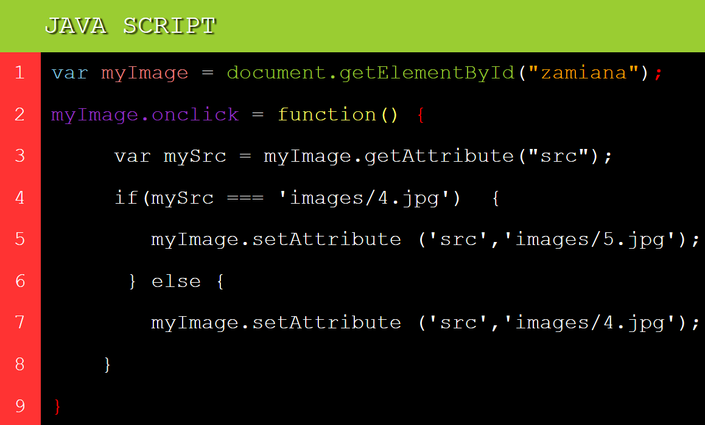

Dodawanie akapitów i zdań
Użycie "h1-6"służy do umieszczania akapitów
Ikonka "p" służy do umieszczania zdań
Tworzenie list
Listy dzielą się na ordered (uporządkowane, takie gdzie kolejność elementów ma znaczenie) i unordered (takie gdzie kolejność elementów nie ma znaczenia)
Elementy znajdujące się na listach oznacza się elementem "li"
Listy ordered czyli uporządkowane oznacza się elementem"ol"
- japka
- ziemniaki
- korwy
Listy unordered oznacza się elementem "ul"
- Japka
- Ziemniaki
- Korwy
Dodawanie linków
Linki dodajemy elementem "a" czyli anchor oraz atrybutem "href" wskazującym przywoływaną stronę
WikipediaDodawanie obrazków
Obrazki dodajemy używając elemtu "img" wskazując źródło elementem "src" i elementem "alt" tekst, który wyświetlany jest w przypadku nie wyświetlenia się obrazka
Kolorowanie.
Przykładową aplikacją stylu jest określenie koloru, można określać wiele różnych właściwości (np. granic do jakich ma się ograniczać kolorowanie czy obramowanie) które oddzielamy ";".
Cienie.
Cienie do tekstu dodwane są komendą "text shadow". Określić należy 4 wartości:
- px - horizontal offset, negatywna w lewo.
- px - vertical offset, negatywne w górę.
- px - blur radius, im większy tym większe rozmycie.
- czwarta określa kolor cienia.
Fonty - można określać cechy takie jak np:
- rozmiar - "font-size".
- wysokość linii oddzielającej wyrazy - "Line height".
- czcionkę "Font-family
Podobnie jak w przypadku kolorów, cechy pisma mogą być aplikowane zarówno do pojedynczych jak i wielu elementów na raz.
BOXy
Elementy w CSS oparte są na pudełkach - każdym zajmującym inną część strony

Do "Margin" i "Padding" podajemy wartości pierwsza określa gór i dół strony ; druga prawą i lewą stronę (auto - automatycznie rozdziela powierzchnię pomiędzy strony), trzecia i czwarta pozwalają kontrolować każdy margines.
Hover.
Float.
Position - fixed.
Tworzenie dropdownów.
Gridy.
Transition:
Do wykonania przemiany elementu konieczne jest określenie dwóch parametrów
- elementu do przemiany.
- czasu trwania efektu.
Variables - są to pojemniki na values, deklarowane są komendą "var" po czym nazwaniem ich. Należy pamiętać o dużych/małych znakach, js rozróżnia wielkość liter.
- String - sekwencja tekstu oznaczana ''
- Number - nie są oznaczane quotami
- Boolean - oznaczane false/true
- Array - struktura pozwalająca przechowywać wiele wartości w jednym reference, wartości zamykane [], słowa oznaczane ''.
- Object - może to być cokolwiek.
Comments - komentaze dodawane jak w CSS: /* Comment */.
Operators
- Addition - służy do dodawania dwóch numerów, łączeniu dwóch stringów.
- Assignment - przypisuje wartość do Variable.
- Equality - eobi test czy dwie wartości są sobie równe i zwraca Boolean (true/false), 'symbol ==='.
- Not, Does-not-equal - zwraca logicznie przeciwną value od tej, którą poprzedza 'symbol !'. Może być używane wraz z equality '!==' operator sprawdza czy dwie wartości nie są równe.
Conditionals - pozwala sprawdzić czy expression zwraca troe/false i w zależności od wyniku odpala inny kod, przykładowe 'if - else'.
Functions - służą do tworzenia funkcjonalności do późniejszego ponownego używania.Możliwe jest pisanie własnych funkcji. Przykładowe funkcje:
- document.querySelector('string - może być więcej niż jeden , przedzielone comami') - zwraca pierwszy element wewnątrz dokumentu.
- Alert('hello') to funkcja która tworzy wyskakujące okienko wewnątrz przeglądarki - string w tym przypadku określa wyskakującą treść.
Events - są to struktury kodu oczekujące na wydarzenie się czegoś w przeglądarce np. naciśnięcie guzika.
Słownik pojęć:
- "var" = variable (storing values np. var x = 5)
- "getElementBy.." = pozwala na wyszukanie elementu HTML na kilka przykładowych sposobów:
- ById = znajduje element po Id.
- ByTagName = znajduje wszystkie elementy z danym tagiem, np.TagName("h2"). Możliwe jest również znalezienie elementów z danym Id a później w nich tych o danym tagu.
- ByClassName = pozwala znaleźć wszystkie elementy po klasie.
- querySelectorALL = pozwala znajdować elementy o danym selektorze CSS.
Image changer w js - krok po kroku.
- Var - pozwala na stworzenie "containter" na wartości ->w tym przypadku pojemnik nazywa się myImage = pobraną z dokumentu wartością jest element oznaczony Id "zamiana", statementy kończy się znaczkiem ";".
- Naciśnięcie pojemnika myImage odpala funkcję.
- Tworzymy kolejny pojemnik "mySrc" i wpisujemy komendę ".getAttribute", która zwraca wartość atrybutu o wpisanej w string nazwie - w tym przypadku "src"..
- Jeżeli atrybut z mySrc równa się podanemu w stringu
- to "src" zmienia się na inny obrazek.
- kiedy się nie równają to zmienia ponownie {w ten sposób zawsze można zmienić obrazek.